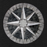

Android IMSI-Catcher Detector (AIMSICD)
Android open-source based project to detect and avoid fake base stations (IMSI-Catchers) or other base-stations (mobile antennas) with poor/…

AntiPrism
Live USB/memory card OpenELEC-based media server toolbox platform for securing the online presence, web browsing and communications.


Autistici/Inventati
Hosting, VPN, e-posta, IM ve dahasından oluşan geniş bir yelpazede gizliliğe duyarlı servisler.


Cjdns
Cjdns is a networking protocol, a system of digital rules for message exchange between computers. “Instead of letting other computers connec…


Commotion
Uses mobile phones, computers, and wireless routers to create decentralized mesh networks.


Cookie AutoDelete
Control your cookies! This WebExtension is inspired by Self Destructing Cookies. When a tab closes, any cookies not being used are automatic…


Decentraleyes
Protects you against tracking through “free”, centralized, content delivery. It prevents a lot of requests from reaching networks like Googl…


Enigmabox
Plug and play cjdns appliance, offering a distributed and end-to-end encrypted telephony and email service.


FreedomBox
FreedomBox herkesin gizliliğe sahip olabilmesi için gizlilik korumasını ucuz sunuculara entegre eder.


FreeOTP
FreeOTP is a two-factor authentication application for systems utilizing one-time password protocols.


Freifunk
A non-commercial open grassroots initiative to support free radio networks around the world.


GPG for Android
A port of the whole GnuPG 2.1 suite to Android.
Gnu Privacy Guard (GPG) gives you access to the entire GnuPG suite of encryption software. …

Gpg4win
Gpg4win is an installation package for Windows (XP, Vista, 7 and 8) with software tools and manuals for email and file encryption on behalf …


Hubzilla
Hubzilla is a powerful platform for creating interconnected websites (hubs) featuring a decentralized identity, communications, and permissi…


JonDo Live CD
Anonim gezinti ve dahasına yönelik yapılandırılmış araçlara sahip, Debian tabanlı Live CD/USB.


KeePassDroid
KeePassDroid is an implementation of the KeePass Password Safe for Android. Read/write support for .kdb and KeePass 1.x. Read/write support …
KeePassXC
Application for people with extremely high demands on secure personal data management. Saves many different types of information such as use…

Kolab
E-posta, dosya, takvimler, adres defterleri ve mobil senkronizasyon için iletişim ve işbirliği sistemi.

Kolab Now
Secure Kolab accounts hosted in Switzerland for 8.99 CHF per month or 4.55 CHF for email-only accounts.


Kontalk
Phone number based messaging client for the masses, using XMPP and OpenPGP encryption. Backed by community-driven servers.


Litecoin
Litecoin (sign : Ł ; code : LTC) is a peer-to-peer cryptocurrency and open source software project released under the MIT/X11 license. Inspi…


Mozilla Thunderbird
Birçok platform destekleyen, Enigmail eklentisiyle posta şifreleme sağlayan e-posta uygulaması.


nsupdate.info
A free dynamic DNS service. Use it to update an easy DNS name with your changing/hard-to-remember IP address. As we use the standard protoco…

Onion Browser
iOS'lu cihazlar için bu açık kaynaklı tarayıcı sayesinde web'de Tor ağı üzerinden gezin.

Open Source Routing Machine
The Open Source Routing Machine or OSRM is a C++ implementation of a high-performance routing engine for shortest paths in road networks. Li…


Orweb
Proxy-capable and Privacy-aware Web Browser for use with Orbot's localhost 8118 proxy, or any HTTP proxy server.

OsmAnd
OsmAnd (OSM Automated Navigation Directions), OpenStreetMap verilerini kullanan bir harita ve navigasyon uygulamasıdır.


PasswdSafe
Password Safe (Android Port). Stores passwords, site URLs, email addresses, notes and much more into encrypted container file, so you only n…
Password Safe
Password Safe (Windows/Linux), designed by Bruce Schneier. Stores passwords, site URLs, email addresses, notes and much more into encrypted …


Postfix
Tüm posta sunucularının, yaklaşık %23'ü tarafından kullanılan, basitçe kurulabilen Posta Aktarım Aracısı (Mail Transfer Agent - MTA).

Privacy Badger
Tracking blocker that tries to learn who is spying on you and then blocks these ads and invisible trackers.


Ring
Ring is a secure and distributed voice, video and chat communication platform that requires no centralized server and leaves the power of pr…

Riot
Riot is a secure collaboration app for group chat, file transfer and voice/video conferencing built on the decentralized Matrix ecosystem, p…


SemanticScuttle
SemanticScuttle is a social bookmarking tool experimenting with features like structured tags and collaborative tag descriptions.


Tor
Tor (previously TOR, an acronym for The Onion Router)[not in citation given] is free software for enabling online anonymity. Tor directs Int…


Tox
Free and open-source, peer-to-peer, encrypted instant messaging and video calling software. The stated goal of the project is to provide sec…

Tunnelblick
Tunnelblick is a free, open source graphic user interface for OpenVPN on macOS. It provides easy control of OpenVPN client and/or server con…


wallabag
wallabag is a self hostable application for saving web pages. Unlike other services, wallabag is free (as in freedom) and open source.

WeeChat
IRC ve XMPP/Jabber için kişiselleştirilebilir CLI(Command Line Interface) sohbet uygulaması.